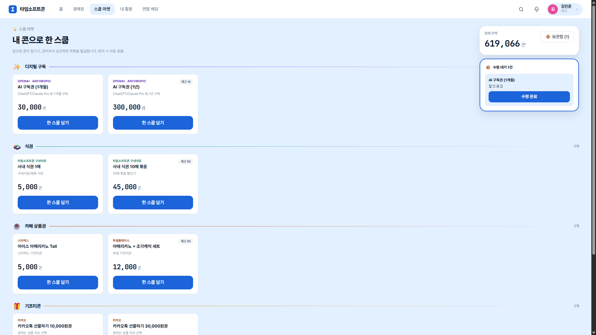
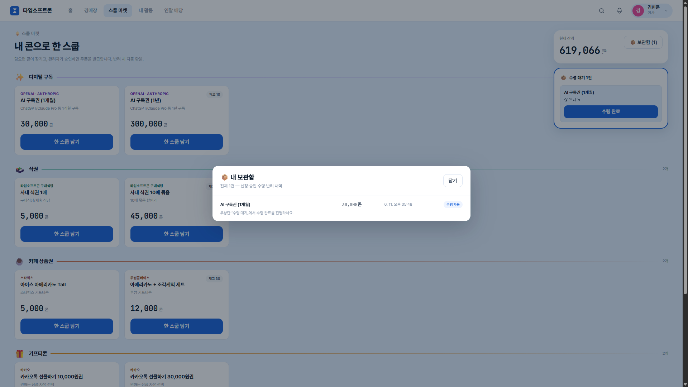
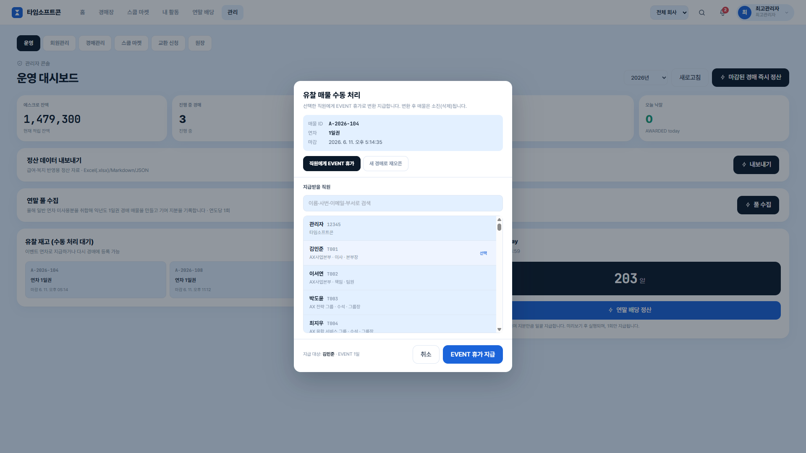
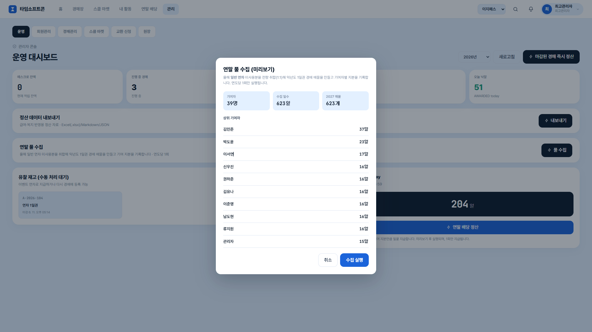
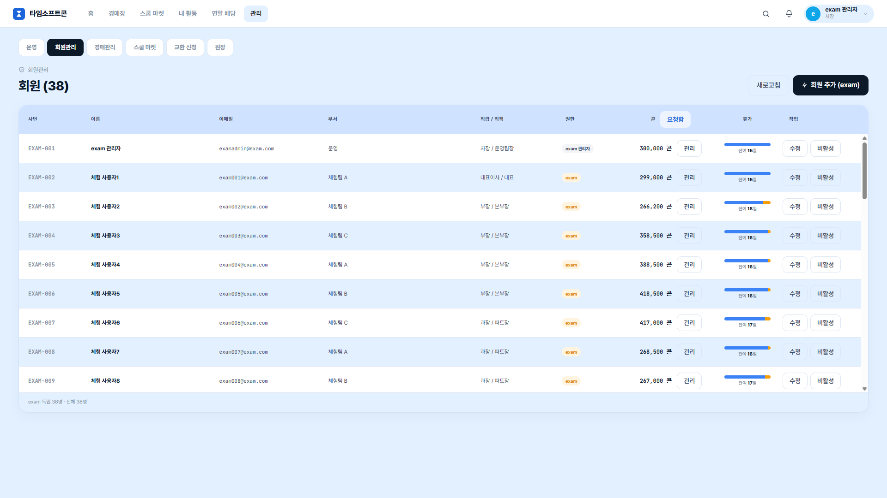

시연 시나리오 보고서
타임소프트콘 - 사내 연차 경매 시스템(B2E 연차 경매·에스크로 배당 플랫폼)
목적 · 라이브 시연의 순서, 단계별 예상 입력값, 기대 결과(UI·로직/DB)를 사전 정의하고, 시연을 뒷받침하는 검증 증빙 및 백업 자료를 규정한다.
시연 핵심 검증 포인트
본 시연은 단순 기능 시연을 넘어, 다음 두 가지 아키텍처적 차별점을 실제 동작으로 검증한다.
- 배당 정산의 멱등성 (액트 4)
연 1회만 실행되어야 하는 정산 로직이 중복 호출되더라도 HTTP 409로 차단됨을 검증하여 데이터 안정성을 확보한다. - 완전 무중단 멀티테넌시 (액트 5)
코드 변경 없이 컨텍스트(JWT companyId)에 따라 데이터 스코프가 완벽히 격리되는 아키텍처를 검증한다. - ezpass 그룹웨어 연동 (액트 1·3)
회원 신원·REGULAR 연차는 ezpass가 정본이며 위임 인증으로 동기화되고, 낙찰 연차의 사용(기안·승인)도 ezpass와 연동된다. 본 시스템은 콘·연차 잔고만 내부에서 소유한다.
1. 시연 순서 · 예상 입력값 · 기대 결과
전체 5막. 기대 결과는 UI 화면 변화와 로직/DB 백엔드·데이터 안전장치로 분리해 기술한다.
액트 1 - 사용자 1일권 구매 (입찰 → 자동 환불 → 낙찰 → 연차 부여)
| # | 단계 | 예상 입력값 (조작) | 기대 결과 |
|---|---|---|---|
| 1-1 | 로그인 + 대시보드 | 창 A: user001@timesoftcone.com (ezpass 계정) | UI우상단 콘 잔액, 내 연차 위젯 REGULAR 연차(파란 막대) 노출 - 모두 ezpass 동기화 값
로직/DB@timesoftcone.com 도메인 → ezpass 위임 인증으로 자동 라우팅, 로그인 시 회원·연차 동기화 |
| 1-2 | 경매 목록 → 상세 → 입찰 | 경매 목록 → Grid 뷰 → 1일권 매물 클릭 → 30,100 콘 입찰 | UI경매 상세 내 시작가(30,000 콘) 노출, 입찰 후 콘 잔액 즉시 −30,100 차감 반영
로직/DB지갑 차감·에스크로 적립·거래 원장 생성(INSERT)을 단일 트랜잭션으로 처리하여 데이터 무결성 보장 |
| 1-3 | 다른 사용자 덮어쓰기 → 자동 환불 | 창 B: user002@timesoftcone.com (ezpass 계정) 로그인 → 같은 매물 30,200 콘 입찰 | UI창 B 잔액 −30,200 + "최고가 입찰" 토스트. 창 A 새로고침 시 30,100 콘 자동 환불로 잔액 복구 + "덮어쓰기 당했습니다" 알림
로직/DB직전 최고가(창 A)에 30,100 콘 자동 환불을 보상 INSERT로 처리(원장 불변) |
| 1-4 | 즉시 마감 → 낙찰 → AUCTION 연차 | 관리자: super@admin.local → /admin/auctions → 해당 매물 즉시 마감 | UI창 B "낙찰! AUCTION 1일 부여됨" 토스트, 대시보드에 AUCTION 1일(노란 막대) 추가. 잔액 변동 없음
로직/DB낙찰 확정 + AUCTION 연차 로컬 부여를 단일 DB 트랜잭션으로 처리(외부 그룹웨어 호출 없음) |
| 1-5 | 낙찰 연차 사용 (ezpass 연동) | user002 → ezpass(그룹웨어) 휴가 화면에서 낙찰받은 AUCTION 1일로 휴가 신청 | UIezpass 휴가 화면에서 연차 사용 신청·승인 진행 - 기안/승인 워크플로는 ezpass가 소유
로직/DB사용 결과가 본 시스템 연차 잔고에 반영되며, 차감 우선순위 AUCTION → EVENT → REGULAR를 내부에서 보장 |


액트 2 - 스토어 → 수령 대기 → 보관함
| # | 단계 | 예상 입력값 (조작) | 기대 결과 |
|---|---|---|---|
| 2-1 | 교환 신청 | 창 A user001 → 스토어 → 카카오 10,000원권 → 신청 | UI"교환 신청 완료" 토스트, 잔액 −10,000 콘 반영
로직/DB신청분 10,000 콘 잠금 처리(미승인 상태로 보류) |
| 2-2 | 관리자 승인 + 쿠폰 발급 | 관리자 → 「교환 신청」 탭 → 「대기」 KPI 클릭(필터) → 승인 → 쿠폰코드 KAKAO-DEMO-1234-5678 입력 | UI신청 상태 승인으로 변경. KPI 카드 클릭=필터, 재클릭=해제
로직/DB발급 쿠폰코드 저장 + 승인 이력 기록 |
| 2-3 | 수령 대기 → 수령 완료 → 보관함 | 창 A 새로고침 → 「📦 수령 대기 1건」 카드의 수령 완료 클릭 → 「보관함(N)」 클릭 | UI쿠폰코드 포함 수령 대기 카드 노출, 수령 완료 시 카드 사라짐, 보관함 모달에서 쿠폰 재확인
로직/DB수령 완료 상태 전이, 발급 쿠폰 영구 보존 |




액트 3 - 관리자 운영 기능 점검
| # | 단계 | 예상 입력값 (조작) | 기대 결과 |
|---|---|---|---|
| 3-1 | 운영 KPI + 내보내기 | super@admin.local → /admin/ops → "정산 데이터 내보내기" | UIKPI 5칸(에스크로·진행·예정·유찰·오늘 낙찰) 표시
로직/DBExcel/MD/JSON 정산 데이터 파일 생성·다운로드 |
| 3-2① | 유찰 매물 처리 - EVENT | "유찰 재고" 카드 → 검색 user003 → 클릭 → EVENT 휴가 지급 | UI"user003에게 EVENT 1일 지급" 토스트, KPI 유찰 −1
로직/DB유찰 매물 → EVENT 연차 전환 부여(REGULAR/AUCTION과 분리) |
| 3-2② | 유찰 매물 처리 - REOPEN | 다른 유찰 매물 → REOPEN 토글 → 마감 시각 입력 → 재경매 | UI"기존 매물 → 새 매물 ID 재오픈" 토스트, /admin/auctions에 새 매물 노출
로직/DB기존 유찰 매물을 신규 경매 인벤토리로 재생성 |
| 3-3 | 스토어 상품 관리 | 「스토어」 탭 → 「상품 추가」 → SKU DEMO-001, "데모 상품", 5,000 콘 → 저장 → 비활성화 토글 | UI표에 행 즉시 추가, 비활성화 시 창 A /redemption 카탈로그에서 상품 사라짐
로직/DB모든 액션을 감사 로그 CREATE/DEACTIVATE로 INSERT-only 기록(사후 조작 불가) |
| 3-4 | 회원관리 두 탭 | /admin/members → EZPASS 탭 ↔ EXAM 탭 전환 | UIEZPASS 탭: 회원추가·작업 컬럼 없음(「지금 동기화」만). EXAM 탭: 회원 추가·행별 수정/비활성 있음
로직/DB위임형(EZPASS)·독립형(EXAM) 회사를 동일 코드의 어댑터 분기로 처리 |
| 3-5 | 충전 처리 (옵션) | EXAM 회원 행 "콘 관리" → +50,000 콘 / 사유 "데모 보너스" → 적용 | UI잔액 즉시 반영
로직/DB원장 CREDIT_ADMIN INSERT(사유 필수 - 감사 추적성 보장) |





액트 4 - 연말 일괄 정산 (핵심: 풀 수집 + 배당 → 에스크로 0)
| # | 단계 | 예상 입력값 (조작) | 기대 결과 |
|---|---|---|---|
| 4-1 | 사전 설명 | (구두 설명) 시드에 전년도(2025) 경매 39건 + stake 10명 존재 | - |
| 4-2 | 연말 풀 수집 | /admin/ops → "풀 수집" → dryRun → "수집 실행" | UI기여자별 일수 미리보기(예: 기여자 39명 · 수집 일수 623일 · 2027 매물 623개), /admin/auctions에 익년도 매물 노출
로직/DBREGULAR 미사용분 → 익년도 1일권 매물 N개 생성(LP-2027-*), leave_pool_run.targetYear UNIQUE로 연도당 1회 보장 |
| 4-3 | 연말 배당 정산 | "연말 배당" → dryRun 미리보기 → 실지급 | UI시뮬레이션(dryRun) 화면에 기여도별 지분율 명시(예: 김민준 1위 23.4%/25일 · 동률 7.5%/8일 다수 · 3.7%/4일 등 25명), 실지급 시 "에스크로 전액 N콘을 N명에게 배당" 토스트
로직/DB누적 에스크로 풀 잔액 전액 배당 처리 완료(에스크로 잔액 0원), 원장에 DIVIDEND 25건 INSERT |
| 4-4 | 멱등성 확인 | "연말 배당" 한 번 더 실행 | UI재실행 시 "이미 배당이 정산되었습니다" 안내, 실지급 버튼 비활성
로직/DBHTTP 409 반환 - 회사 스코프의 LedgerEntry(actionType=DIVIDEND) 존재 여부로 멱등 체크(이중 지급 원천 차단) |



액트 5 - 회사별 데이터 격리 (멀티테넌트)
| # | 단계 | 예상 입력값 (조작) | 기대 결과 |
|---|---|---|---|
| 5-1 | 회사 스위처 | super@admin.local → 우상단 스위처 → EZPASS ↔ EXAM 전환 | UI회원·매물·원장·통계가 회사별로 완전히 교체
로직/DB컨텍스트 전환에 따라 데이터 스코프 전체가 회사 단위로 분리 |
| 5-2 | 다른 회사로 직접 로그인 | 새 시크릿창 → examadmin@exam.com → /admin/members | UIEXAM 직원만 표시, EZPASS 데이터 없음, 회사 스위처 미노출
로직/DBJWT companyId가 모든 쿼리에 자동 스코프 - 타 회사 데이터는 조회조차 불가 |
| 5-3 | 신규 회사 추가 (구두 설명) | (구두 설명) company 행 + 사용자 companyId 추가 | UI-
로직/DB코드 변경 0으로 신규 회사 온보딩, 도메인 추가 시 인증 라우팅 자동 적용 |




2. 시연 실패 시 대체 자료 (스크린샷)
시연 환경에 문제가 생겨도 같은 결과를 보여줄 수 있도록, 단계별 스크린샷을 미리 확보해 둔다.
2-1. 캡처 카탈로그
1장 각 단계 갤러리에서 사용한 캡처의 번호 · 화면 의미 · 실물 파일 · 대체 구간을 한 표에 정리한다. 실물 파일은 GitHub 저장소(docs/05_handover/img/)에 함께 보관되어 평가 시 원본 해상도로 직접 확인할 수 있다.
전체 캡처 한눈에 보기
| 캡처 | 화면 / 의미 | 실물 파일 | 시연 구간 |
|---|---|---|---|
| 캡처-1 | 대시보드 - 잔액 + REGULAR 연차 위젯 | act1-1-dashboard.png | 1-1 |
| 캡처-2a | 경매 목록 (Grid 뷰) | act1-2-auction-list.png | 1-2 |
| 캡처-2b | 입찰 성공 + 낙찰 화면 | act1-2-bid-win.png | 1-2 / 1-4 |
| 캡처-3 | 내 활동 - 환불·낙찰 내역 | act1-3-activity.png | 1-3 |
| 캡처-4 | EZPASS 사용자 연차 사용 신청 화면 | act1-5-ezpass-leave.png | 1-5 |
| 캡처-5a | 스쿱 마켓 - 카탈로그 + 직접 제안 | act2-store.png | 2-1 |
| 캡처-5b | 관리자 교환 승인 + 쿠폰 발급 | act2-redeem-approve.png | 2-2 |
| 캡처-5c | 우상단 수령 대기 - 쿠폰코드 + 수령 완료 버튼 | act2-3-pending-claim.png | 2-3 |
| 캡처-5d | 「📦 내 보관함」 모달 - 신청·승인·수령 내역 | act2-3-vault.png | 2-3 |
| 캡처-6a | 관리자 운영 대시보드 (KPI 5종) | act3-1-ops.png | 3-1 |
| 캡처-6b | 정산 데이터 내보내기 - 모달 | act3-1-export.png | 3-1 |
| 캡처-6c | 내보내기 결과 - XLSX | act3-1-export-xlsx.png | 3-1 |
| 캡처-7a | 경매관리 - 매물 수동 추가 모달 | act3-2-auction-mgmt.png | 3-2 |
| 캡처-7b | 유찰 매물 수동 처리 - EVENT 휴가 지급 | act3-2-event-grant.png | 3-2① |
| 캡처-8 | 스토어 상품 관리 - CRUD + 감사 로그 | act3-3-store-admin.png | 3-3 |
| 캡처-9 | 회원관리 - EZPASS/EXAM 탭 | act3-4-members.png | 3-4 |
| 캡처-15 | 충전 처리 - 사유 입력 + 잔액 반영 | act3-5-charge.png | 3-5 |
| 캡처-16 | 연말 풀 수집 dryRun - 기여자 39명·623일·2027 매물 623개 | act4-2-pool-collect.png | 4-2 |
| 캡처-10 | 사용자 시점 본인 배당 미리보기 (참고) | act4-3-dividend.png | 4-3 보조 |
| 캡처-11a | 관리자 배당 정산 모달 dryRun (지분율 표) | act4-3-dividend-settle.png | 4-3 |
| 캡처-11b | 실지급 완료 - 토스트 "에스크로 전액 지급" + KPI 에스크로 0 | act4-3-dividend-result.png | 4-3 |
| 캡처-12 | 멱등 차단 - "이미 정산되었습니다" | act4-4-idempotent-409.png | 4-4 |
| 캡처-13a | 회사 스위처 → EZPASS (회원 39명) | act5-1-switch-ezpass.png | 5-1 |
| 캡처-13b | 회사 스위처 → EXAM (회원 38명, 데이터 통째 교체) | act5-1-switch-exam.png | 5-1 |
| 캡처-13c | exam 관리자 로그인 - 회사 스위처 미노출 (격리) | act5-2-tenant-isolated.png | 5-2 |
| 캡처-14 | 거래 원장 - 자동 환불 내역 (INSERT-only) | act5-ledger.png | 4-3 / 마무리 |
🗂️파일명 규칙 ·
act{막}-{단계}-{설명}.png 형식 (예: act4-4-idempotent-409.png) - 캡처 번호와 시연 단계가 파일명만으로도 즉시 매칭된다.2-2. 실패 유형별 우회 전략
| 예외 상황 | 대응 / 복구 시나리오 |
|---|---|
| 백엔드 다운 | 백업 캡처-1 ~ 캡처-14로 흐름만 설명 |
| 즉시 마감 미동작 | 캡처-2b(낙찰 결과)로 화면 대체 |
| 배당 dryRun 결과 없음 | 캡처-12(409 "이미 정산됨")로 전환 → 멱등성 검증 시연으로 활용 |
| 멀티테넌트 화면 미표시 | 캡처-13 또는 헥사고날/ER 다이어그램(presentation/img/)으로 구조 설명 |
| 토스트·알림 미표시 | 캡처-3·캡처-11b로 결과만 제시 |
| 시간 초과 | 액트 3-5(충전)·5-3(신규 회사 설명)부터 생략. 액트 4(연말 배당)는 생략하지 않는다 |